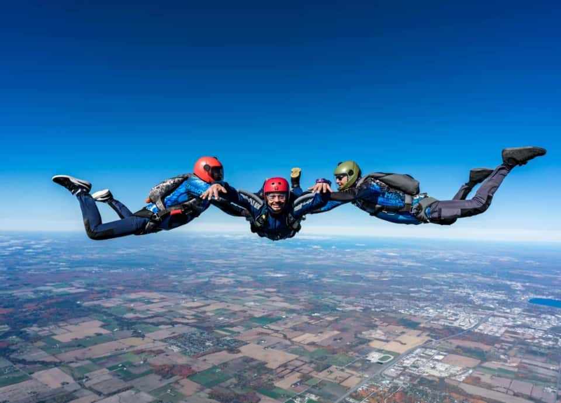

-


- SKYDIVING :
If you’re one of those people who gets a rush from the idea of throwing yourself out of a plane, then this is a level up for you: you can throw yourself out of the plane while looking down over a great wonder of the world.
-

- DIVING :
When you think of shark diving, you might picture being lowered into the ocean in a cage with Great Whites attacking you from all angles in South Africa. And while this is appealing for some, the reality of diving with sharks in the Red Sea in Egypt is a lot more peaceful and safe, while still giving you that extreme adrenaline rush you crave -- and really shows why we need to do our best to protect Egypt’s sharks.
Non-Egyptians aren’t usually aware of the *amazing* diving and aquatic life we have in Egypt, even though we top international dive site rankings year after year. Read our article about the best Egyptian dive sites for all levels.
If you want to see these beautiful fish in their natural habitat and get your heart beating a little faster, there are several different dive sites dotting the Red Sea off Egypt’s coast known for their shark sightings.
-
- ROCK CLIMBING :
If you love being outdoors and working up a sweat but in an extreme kind of way, then rock climbing and bouldering in Dahab’s desert mountains might be for you. Rock climbing is pretty self-explanatory, but don’t expect the easy indoor gym kind you might be used to -- we’re talking real crags and mountain faces. The good news is that in Dahab there’s the option of taking rock climbing courses for beginners, intermediate levels and experts; something for everyone. Details: Most rock climbing in Sinai happens in the winter months because of the moderate temperatures, but if you’re in Dahab in the summer, it’s still possible to climb, but just in the very early morning before the sun starts sizzling.
-

- DIRT BIKINK IN THE DESRT :
If you’ve always wanted to let loose on a dirt bike away from paved roads, cars and people, then head over to Hurghada (full guide here) where you can go wild off-roading in the desert on a dirt bike (or quad bike if a dirt bike is a little too intense for you). You’ll go over dunes, valleys and varied desert terrain with a guide who decides the route based on your experience. It’s sandy, dusty and you’ll be sore for days after, but the adrenaline rush is real and hours will go by in a flash. You can also read our post about 25 fun things to do in Hurghada and El Gouna for more activity ideas.